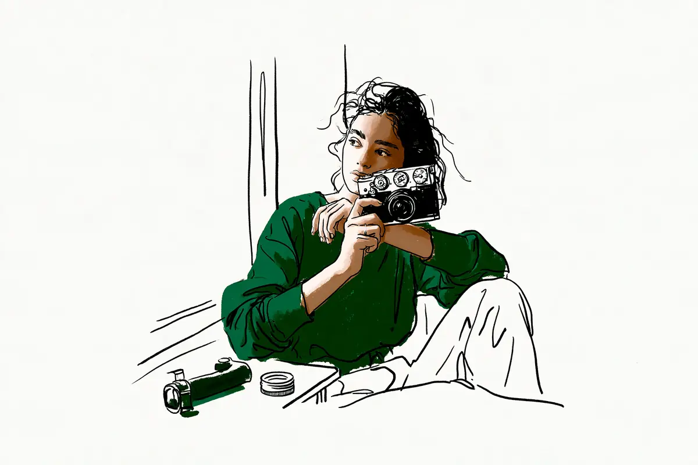

この記事には広告(アフィリエイトリンク)が含まれます。
現在地: 買う前に迷ってる
Z fcの後悔・デメリット、買った人の不満と手放した理由

Z fcを自分で買った・使っていると書いた83人の声を集めました。
- 本人が「後悔」と書いたのは2人。1人はピント合わせ(AF)の性能・グリップのなさ・色の設定の3つを、もう1人はレンズ周りを、少し後悔した点に挙げています。どちらも手元に残しています
- このサイトの基準(後悔・使わなくなった・無駄だった)に当たる人は別にいて、使わなくなったと書いて手放した人が2人、合わなかったと書いて短い間で手放した人が4人です
- 不満は、グリップがない・本体に手ブレ補正がない・レンズ・上面のダイヤル・フルサイズへの憧れなどに分かれ、どれが多いかは分け方で変わります(早見表)
- 替えた人の記事が見つかりやすい集め方なので、83人のうち何人が手放すか、という割合としては読めません(数え方と偏り)
Z fc(ニコンの表記はZfc)は、2021年7月に発売されたニコンのミラーレス(センサー=光を受け止める板が見た映像を、画面やのぞき窓で見るタイプのカメラ。言葉の意味)です。フィルムカメラのような見た目で、右手で握る出っ張り(グリップ)がない平らな形をしています。私はカメラを持っていないので、83人の声を集めて整理する側で、買う・買わないはすすめません。
- まだ買う前で、後悔しないか知りたい → 早見表、グリップの節、手放した・替えた人
- 買ったばかりで、不満が出てきた → 手ブレ補正の節、レンズとキット、公式の数字
- 使っていて物足りなくなった → 手放すか迷っている人と写りの節
目次
- Z fcの口コミ早見表: 不満の種類、人数、その人がどうしたか
- Z fcで「後悔」と書いた2人と、使わなくなって手放した人
- Z fcを手放した・替えた19人: 行き先と理由を、人ごとに(また買った人も)
- Z fcのデメリット「グリップがない」: 足した人、足さずに使い続けた人、手放した人
- Z fcのデメリット「本体に手ブレ補正がない」: レンズによって違った
- Z fcのそのほかのデメリット: 上面のダイヤル・質感・AF・バッテリー・ゴミ・故障
- Z fcのレンズとキット: 望遠が足りない、ぼかしたい、見た目と合わない
- Z fcの写り: 撮って出しの色と、フルサイズへの憧れ
- Z fcで不満が出た人の立場: 2台目・サブの経験者と、最初の1台の人
- Z fcに満足した人の声: 見た目、軽さ、同じ機種に買い直す
- Z fcの公式の数字: 質量・撮影可能コマ数・手ブレ補正・グリップ・現行の構成(2026年10月時点)
- 数え方と偏り
- Z fcは買わない方がいい?読んだ範囲の答え
Z fcの口コミ早見表: 不満の種類、人数、その人がどうしたか
83人が書いていた不満を、本体・レンズ・写りのどれも同じ細かさ(1つの話題=1行)で分けました。私の読み方で、1人が2つ以上に入り、行の分け方で順位は変わります(グリップ・操作・質感をまとめれば22人、レンズの行を割れば2〜4人ずつ)。右の列は、その種類を書いた人がそのあとどうしたかの例で、1人ずつの話です。
表の中の言葉の意味
上面のダイヤルは、シャッター速度・ISO感度・露出補正を本体の上の3つのつまみで決める仕組み。ISOオートは、暗くなると感度を自動で上げる機能(言葉の意味)。手ブレ補正は、カメラの揺れを打ち消す仕組みで、Z fcは本体ではなくレンズ側で行います(言葉の意味)。撮って出しはカメラが仕上げたままの写真、ピクチャーコントロールはその色や明るさの傾向を決めるニコンの設定の名前。フルサイズは、Z fcのAPS-Cより大きいセンサーの規格(言葉の意味)。単焦点は写る範囲が決まったレンズ、望遠は遠くを大きく、広角は広い範囲を写すレンズ、高倍率ズームはその両方を1本でまかなうレンズ(言葉の意味)。瞳AFは、人の目に自動でピントを合わせる機能(言葉の意味)。ボケはピントの外がにじむこと(言葉の意味)、白飛び・黒つぶれは明るすぎて白一色・暗すぎて黒一色になった部分(言葉の意味)。Zマウントはニコンのミラーレス用のレンズの取り付け規格、レリーズは本体に触れずにシャッターを切る外付けの道具です。
| 種類(私の読み方) | 書いた人数 | その人がどうしたか(例) |
|---|---|---|
| グリップがない・持ちにくい(片手で撮れない・指が痛い・望遠で不安定) | 15人 | グリップを足しても持ちにくい → 3日でZ30へ |
| レンズ(キットのズーム不足・ぼかしたい・単焦点が広角すぎた・大きいレンズと見た目が合わない・周辺の品が少ない) | 10人 | 一緒に買った単焦点が広角すぎたのかも → 使わなくなり、レンズを交換できない小型機へ |
| 操作(上面のダイヤルを使わない・慣れない・ISOオートの設定・1/4000秒まで・ピントの拡大表示・レリーズ) | 8人 | 上面のダイヤルに慣れない → 1か月でX-Pro2へ |
| 本体に手ブレ補正がない | 7人 | 補正のないレンズで気を遣う → EOS R3へ |
| フルサイズへの憧れ・暗い場所・ボケ・白飛びと黒つぶれ | 6人 | Z fcのフルサイズ版を待っていた → Zfへ |
| 色・撮って出し・ピクチャーコントロール | 5人 | 撮って出しで完結させたい → X-Pro2へ |
| 質感・おもちゃ感・高級感がない | 5人 | 造りがおもちゃ → 短い間で手放した |
| AF(瞳AF・上位機にある追尾の方式がない・AFの性能) | 3人 | 瞳AFの精度 → Zfへ |
| 重い・もっと小さいものへ(持ち出しが億劫) | 2人 | 通勤のトートバッグに入れて持ち歩くように → E-M10 Mark IVへ |
| バッテリーの持ち | 2人 | 持ちが悪い → Z5IIを足してZ fcは残す |
| センサーのゴミ(落とす機能がない・ほこりが付きやすい) | 2人 | 落とす機能がないことが使ううちに不満に → S1へ |
| ケーブルレリーズが使えない | 2人 | 汎用のレリーズケーブルが使えない → Zfも買い、Z fcの扱いは書いていない |
| 故障・不具合 | 2人 | シャッター速度のダイヤルの故障 → 手放した |
| 動画 | 1人 | 載せられる出来にならない → S1へ |
| 撮れる写真が思ったのと違う・上達しない | 1人 | iPhoneでも同じような写真と感じた → 買い替えを検討中 |
「後悔」と書いた2人のうち、Keigo K.さんはグリップ・AF・色の行、晶さんはレンズの行に入っています。見た目・デザインを決め手や気に入った点に書いた人は17人で、うち5人は手放した・替えた側、1人は一度手放してまた買った人です(私の読み方。良い点はこの表に入れていません)。
83人の結果を、購入リンクの有無で分けて数えると、こうなります。購入リンクの有無は、記事の本文にAmazon・楽天などの商品リンクやアフィリエイト・広告の表記があるかを、保存したページで機械的に確かめました。
| 結果(私の読み方) | 人数 | うち購入リンクのないサイトの書き手 |
|---|---|---|
| 満足 | 28人 | 18人 |
| 満足と不満の両方を書いて使い続けている | 10人 | 6人 |
| 本体は続け、不満をレンズの追加で解決しようとしている | 4人 | 4人 |
| Z fcを残して、別の機種を足した | 2人 | 1人 |
| 別の機種に替えた(売却・下取り済み) | 13人 | 9人 |
| 手放した(使わなくなった・合わなかった・故障・譲った) | 6人 | 6人 |
| 一度手放して、また買った | 4人 | 2人 |
| 買い替え・手放し・買い足しを迷っている | 8人 | 7人 |
| 困りごとだけで、評価はない | 1人 | 1人 |
| 買った直後で、評価はまだ | 7人 | 4人 |
迷っている8人のうち7人は知恵袋の質問者です。知恵袋は困ったときに質問する場なので、迷っている段階の声が集まり、その後どうしたかは書かれていません。集め方と偏りは数え方と偏りにあります。
Z fcで「後悔」と書いた2人と、使わなくなって手放した人
本人が「後悔」という言葉を自分のことに使ったのは2人です。
2026年のKeigo K.さん(カメラの紹介もしているサイトです)は、カメラを始める最初の1台としてZ fcを買い、1年ほど使った時点でこう書いています。
当然いい点ばかりではなく、使っていくうちに見えてきた後悔ポイントもあります。
挙げたのは、AF(カメラが自動でピントを合わせる機能)の性能、グリップ、ピクチャーコントロールの3つです。
コンパクトなレンズをつけている間はあまり気になりませんが、大きめのレンズをつけるようになってからはグリップ力のなさが気になるようになりました。
結論は、気軽に持ち歩ける1台として満点、でした。3か月後の記事では、本体に手ブレ補正がないことなどからフルサイズのZ5IIを買い足し、Z fcは手元に残しています。
もう1人は、Z fcが初めてのカメラだった晶さんです。2025年の1年目のレビューで、こう書いています。
買ってから少し後悔したのは主にレンズ周りです。
Zマウントの大きなレンズが本体の見た目に似合わない、という話で、全体としてはほぼ満足、という見出しでした。最初に買ったカメラの記事で引いた、見た目に未練があると書いた人はZ50IIを買った人なので、数えていません。
このサイトでは、後悔・使わなくなった・無駄だった、のどれかを本人が書いていれば後悔の側として数えています。「後悔」の語を使わずに、該当する人はこう分かれます。
- 使わなくなったと書いて手放した2人: s.s. roomさん、ごんたさん
- 出番が減った・使う場面がない・飽きたと書いた6人: 手放し済みが四季の移ろいさんと知恵袋の回答者1人。手元に残すのがalertyanさんとカメラを買う技術さん。知恵袋の質問者2人は迷い中と、半年触らず
- 合わなかったと書いて短い間で手放した4人: 鈴木ユートピアさん、m310さん、KINOCONOIEさん、知恵袋の回答者1人
手放した人は次の節で行き先ごとに書きます。
Z fcを手放した・替えた19人: 行き先と理由を、人ごとに(また買った人も)
別の機種に替えた13人と、次の機種を書かずに手放した6人の、合わせて19人です。うち4人は購入リンクのあるサイトの書き手で、知恵袋の人は3人。不満はなかったと書いて替えた人が3人、気に入っていたと書いたうえで本体の不満で替えた人が3人います。行き先で6つに分けました。
フルサイズのZfへ移った4人と、Zfの登場で下取りに出した1人
Zfは、Z fcと同じく、ニコンがフィルムカメラのFM2から着想を得た外観と説明しているフルサイズの機種です(Zfの製品ページ)。ニコンの公式ページで、Z fcの後継と書かれた機種は見つかりませんでした。
2024年のきくりんぐさんは、Z 6とZ fcを併用していた経験者で、その年の機材の入れ替えとして2台を手放しました。
これのフルサイズが出ればと期待していたZfがでたのでいた仕方ないです。
D750とZ5も持つ四季の移ろいさん(カメラの紹介もしているサイトです)は、不満はなかった側の1人です。Z fcがとても気に入っていて手放すことはないだろう、と2023年に書き、翌年、使う場面がなくなった、としてレンズごと売却しました。
理由は、Nikon Zfが楽し過ぎるからです。
2026年のPROSSIMA FERMATAさんは、発売直後に買って5年使い、Zfの下取りに出しました。理由は、もっとぼかしたい、夜景でノイズを乗せたくない、という撮れる写真の幅です。知恵袋のくろっちさんは、回答者として2024年にこう書いています。
Zfがでたと同時にZfcを売ったのですがZfも瞳AFはイマイチでした。
28mmのレンズを28mmのまま(フルサイズの写る範囲で)使いたかった、とも。2026年の回答では、結局カメラをやめてZfも手放した、とありました。2023年のurouro.blogさん(カメラの紹介もしているサイトです)は、ニコンの上位機も使う経験者で、不満はなかった側です。7月の記事では、軽くて小さいところに満足していると書き、翌月の記事では、Zfが出るといううわさの段階で、値打ちが下がったと感じる前に下取りに出しています。行き先は書かれていません。
他社のフルサイズへ移った2人: 暗い場所、手ブレ補正、ゴミ
2022年のAaron Shinさんは、写真の再開にZ fcを選び、2か月でパナソニックのS1に替えました。気に入っていたと書いたうえで替えた1人です。
結構気に入っていたカメラなのに、2ヶ月で手放すことにした。
屋内と暗い場所で満足できる結果にならなかったのが理由です。本体に手ブレ補正がないこと、センサーのゴミを落とす機能がないことも、使ううちに不満になり、動画も人に見せられる出来にならなかった、と。2021年のぽちろぐさん(カメラの紹介もしているサイトです)は、中古で買って1か月でキヤノンのEOS R3の下取りに出した経験者です。不満は、ISOオートでシャッター速度の下限を決められないこと、本体に手ブレ補正がないこと、見た目の中途半端さの3つ。
同じニコンの、グリップのある機種へ移った2人
2024年の鈴木ユートピアさんは、フルサイズのLUMIX S5IIXを手放してZ fcを買い、3日で手放した経験者です。
そしてグリップを追加したにも関わらず自分には持ちにくすぎた。
反対の手を添えないと撮れない、上面のダイヤルを使わない、裏蓋が開けづらい、と挙げ、写りは好きだと書いたうえで、Z30に替えました。2022年の雲心さんは、Z5を持っていて、見た目に惚れてZ fcを足しました。ダイヤルで撮る楽しさは書きつつ、グリップ感がまったくないことを欠点に挙げた人です。手持ちのDXレンズ(APS-C用のレンズ)に合わせる本体として、グリップのある中古のZ50を選びました。
来るべきレンズと今あるかわいいレンズ、それに合わせるボディは私の中ではもうZfcではなくZ50でした。
富士フイルムへ移った2人: 光学ファインダーと撮って出しの色、ダイヤルとの相性
2026年のなみさんは、納品の仕事もある経験者で、Z fcを高く評価したうえで1年で手放しました。
簡単に言えば「あまりに便利すぎた」からだと思っています。
行き先の富士フイルムX-Pro2に求めたのは2つで、レンズを通した景色をそのまま見る光学ファインダー(言葉の意味)と、撮って出しで完結する絵作りです。色をカメラの中で追い込むフレキシブルカラーピクチャーコントロールがZ fcにはなく、仕上げに時間がかかる、と。2022年のKINOCONOIEさん(カメラの紹介もしているサイトです)は、富士フイルムから28mmキットのZ fcに替えました。屋外に持ち出さないまま、1か月で手放しています。自分の力量の問題でもある、と断ったうえで、上面のダイヤルの操作に慣れなかった、と。設定を1つずつ調節して撮るこの機種の考え方が、思いつくままに撮りたい自分とは合わなかったのかもしれない、という推量の書き方です。行き先は同じX-Pro2でした。
もっと小さいものへ移った2人
2026年のSuzukenSambarさんは、α6700を売って28mmキットのZ fcを買い、4か月で手放しました。買った時点でグリップがなく持ちにくいと書いていて、バス通勤でトートバッグに入れて持ち歩くようになり、もっと小さいものが欲しくなります。
そんなわけでZfcには悪いけど、下取りに出してE-M10を迎えることにした。
作例の色が好みで、レンズが安いことも理由でした。移った先のE-M10 Mark IVを毎日持ち歩いている話はE-M10 Mark IVの記事にあります。同じ年のs.s. roomさんは、見た目でZ fcと広角の単焦点を買い、不満はないまま使わなくなった人です。今思えば単焦点が自分には広すぎたのかもしれない、と。替えた理由には、こんな1つもありました。
そのうちレンズ沼にはまりそうだった
行き先は、レンズを交換できないLUMIX L10でした。
持てない・使わなくなった・故障・友人へ、で手放した6人
2026年のm310さんは、各社のミラーレスを使ってきた経験者です。グリップがない不安を、持ってわくわくする気持ちが上回って28mmキットを買いましたが、1か月で売却しました。
Zfcで撮影するたびに、しっかり持つことができず、一気にワクワク感が冷めていきました。
本人の言葉は後悔ではなく断念で、ミラーレスからいったん離れる、と書いています。2025年のごんたさんは、8割はデザインで買った、と。
FUJIFILM X100VIを買ってからNikon Zfcの使用が極端に減った。
上面のダイヤルをほとんど使わない、12-28mmのズームの広い側もあまり使わない、と続き、良いカメラだが自分の使い方に合わなくなった、という書き方です。仕事でも撮る経験者のわたし歩記さんは、メインをソニーに替えた後も、見た目と軽さでZ fcを残していました。2022年に手放した理由は、シャッター速度のダイヤルの故障です。1/250に合わせても表示が1/4000になり、こうなりました。
試しにシャッターを切ると、写った画は真っ黒です。
故障で手放した体験談は、83人の中でこの1人です。2023年のDaka-M Projectさんは、買ったカメラをめったに売らない人です。独立してライターになる友人に協力して、手持ちの中で譲れるZ fcを、値段は相手に任せて売りました。1年8か月で使う頻度は多くなかったが、苦労して手に入れた1台なので手放すのは寂しい、と。知恵袋の回答者2人のうち1人は、こうでした。
カラバリでブラウン選んだが結局すぐ飽きてしまって売却しました。
もう1人は短い間持っていた人で、造りが玩具のようで、グリップなどの周辺の品やレンズも少なくて飽きる、と(2026年)。
手放すか迷っている8人
7人は知恵袋の質問者です。フルサイズへが3人。さんどさん(中古のZ5・Z6・α7II)、Zfへの乗り換えを相談した質問者、Z5IIかX-T5か、フルサイズも含めて迷う質問者です。ほかは1人ずつで、こうでした。
- ダイヤル操作に慣れたので、長年欲しかった富士フイルムへ、という質問者(2025年。手放すかは書いていません)
- Z fcでも重く感じて持ち出しが億劫になり、GRにするか迷う質問者(2024年)
- 性能が古くなってきたとしてPENへの乗り換えを迷う、OM-1も持つ経験者(2026年)
- Z fcをサブにしてもう1台を足したい質問者(2024年)
- note・ブログの1人はマイふぁぶさん(カメラの紹介もしているサイトです)。2年9か月の時点で手放すことを考えながらのレビューで、好みの問題で機種が悪いわけではない、と(2024年)
手放す前に、売るといくらになるかを無料で知る方法は売るなら、まず無料で相場を知るに書きました。
一度手放して、また買った4人
手放した経験のある23人(上の19人と、この4人)のうち、またZ fcを買ったのは4人です。うち2人は購入リンクのあるサイトの書き手で、1人は仕事の検品用に買い戻した人です。
2025年のnonさんは、前年の8月にZ fcを手放し、富士フイルムのX100VIだけで子どもと旅行を撮っていました。手放した理由は本文にありません。
特に子どもを撮る時は一瞬が大切なので「zfcだったらな、、」と思うことが何度もありました。
ピントの合い方が理由で買い直しました。数多くのカメラを買ってきたlife-y.tokyoさん(カメラの紹介もしているサイトです)は、Zfとソニーのα1も持つ経験者です。題は後悔する人の特徴を書く形ですが、本人の体験は、こうでした。
一度手放しましたが、ブラックのZfcを再度手に入れました。
2025年の記憶カメラさん(カメラの紹介もしているサイトです)は、質感の印象が軽く物足りないとしてシルバーを手放した経験者です。Zfを使い始めると、大きく重いZfに比べてZ fcの軽さが良く見えてきて、ブラックで買い戻しました。
再び買い戻すくらいなんで、いいカメラです。
2025年のKOTARO-PARADISEさんは、富士フイルムのXシリーズを愛用するカメラマンです。発売日に買って気に入らずにすぐ売り、4年後に、レンズの検品に必要になったとして中古を買い戻しました。好みで戻ったのではなく、仕事の道具としてです。残念な点として、ケーブルレリーズが使えないことを挙げています。
Z fcのデメリット「グリップがない」: 足した人、足さずに使い続けた人、手放した人
ニコンの製品ページは、Z fcの形を「グリップレスのフラットなフォルム」と書いています。別売りの純正グリップ(Zfc-GR1)があり、公式通販で税込18,700円です(公式の数字)。グリップのなさを不満や注意点に書いた15人の内訳です。
- 手放した側: 4人(鈴木ユートピアさん・m310さん・雲心さん・SuzukenSambarさん)
- グリップを足した人: 5人(うち4人は購入リンクのあるサイトの書き手)
- 足さずに使い続けている人: 6人(うち3人は購入リンクのあるサイトの書き手)
15人のうち8人は経験者、3人は最初の1台の人で、どちらにも出ています。
グリップを足した5人。 EOS R6 IIIも使うナルコスカルさんは、純正のグリップについて、こう書きました(2026年)。
純正品として後付けで装着できるグリップが別売りされているが、正直に言うと少し野暮ったいデザインをしている上に、社外品よりも高価だ。
社外品で補っています。ほかの4人は購入リンクのあるサイトの書き手です。追加で発注した人、重い高倍率ズームのために後付けした人、足す利点やSmallRig製のレビューを書いた人で、名前は読んだ一覧に。
足さずに使い続けている6人。 つれひびさん(カメラの紹介もしているサイトです)は、満足しつつ、平らな形のため片手での扱いに不利、と(2025年)。Keigo K.さんの大きめのレンズ、さんどさんのグリップのなさは上と下に。指が痛くなる(モモちんさん)、望遠で前が重くなる(life-y.tokyoさん)、ZfとZ fcの2台まとめての不満(斧寺耕作さん、2025年)もいます。
15人には入れていない人。 撮っちゃいました3さん(中古におまけで付属、2023年)と銀の備忘録さん(カメラの紹介もしているサイトです。黒檀のものを付けた、2023年)は、グリップを付けたが不満とは書いていません。日々のおでかけ記録さんは、買う前は気がかりだったが、レンズが大ぶりなためか思ったほど気にならなかった、と(2024年)。
Z fcのデメリット「本体に手ブレ補正がない」: レンズによって違った
ニコンの仕様表では、Z fcの手ブレ補正機能はレンズシフト方式(VRレンズ使用時)で、本体には手ブレ補正がありません(公式の数字)。VRは、ニコンのレンズ側の手ブレ補正の呼び名で、キットの2本のうちレンズ名にVRと付くのは16-50mmです。これを不満や注意点に書いた7人のうち、補正のないレンズでの話と分かるのは3人です。Keigo K.さんの24-120mm、モモちんさんの28mm、ぽちろぐさんの書き方は、こうでした。
Z fcにはボディ内手ぶれ補正が無いため、手ぶれ補正機能を搭載していないレンズを使う時は気を遣います。
2025年のルイデントさん(カメラの紹介もしているサイトです)は、16-50mmキットを1か月使いました。大きな不満はないが、シャッター速度をもう少し稼ぎたい場面があり、本体の手ブレ補正はやはり欲しかった、と(α6400の記事と同じ書き手の別の記事)。
気にならなかった人。 ドールやぬいぐるみを明るい単焦点で撮るぶなさんは、撮るものからして気にならない、と(2024年)。記憶カメラさんの見方は、こうです。
手ぶれ補正が載っていないのも、実用上はなんら問題ないし、その分ボディもコンパクトに仕上がっている。
子どもと花火を撮るマイふぁぶさんは、構えを安定させればどうにかなる、と(2024年)。40代カメラさんは、ぶれることを失敗を経験できる良さとして書いています(2025年)。動画の手ブレを理由に手放した・後悔した人は、読んだ範囲では見つかりませんでした。暗い場所でシャッターが遅くなる仕組みはオートなのにブレるのはなぜ?に分けて書きました。
Z fcのそのほかのデメリット: 上面のダイヤル・質感・AF・バッテリー・ゴミ・故障
上面のダイヤルと操作。 8人。こう分かれました。
- 結局使わない: 鈴木ユートピアさん、ごんたさん、知恵袋のさんどさん
- 慣れなかった: KINOCONOIEさん
- ISOオートで手ブレしないシャッター速度を決められない(AEカーブと呼ばれる設定): ぽちろぐさん
- ISOダイヤルでISOオートにできない、シャッター速度が1/4000秒まで: マイふぁぶさん
- 手動でピントを合わせるときの拡大表示が使いにくい: Foto Anthemさん(経験者、2024年)
- 汎用のレリーズケーブルが使えないなどで、使い勝手は満足から遠い: 艦長日誌さん(経験者、軽さは高く評価、2021年。2023年にZfを買い、Z fcの扱いは書いていません)
反対に、ダイヤルの操作が楽しい・学べると書いた人が4人います。
質感。 5人。こう分かれました。
- 造りがおもちゃ: 知恵袋の回答者
- おもちゃ感で最初は放置した: Foto Anthemさん
- 高級感がない: フォト旅さんぽさん
- 質感の印象が軽い: 記憶カメラさん(最初に手放した理由)
- 裏蓋が軽い感じ: 鈴木ユートピアさん
AF。 3人。瞳AFの精度(くろっちさん)とAFの性能(Keigo K.さん)は上に書きました。カメラを買う技術さん(カメラの紹介もしているサイトです)は、Z6IIIをメインにしてからZ fcの出番が激減した経験者です(2026年)。上位機にある3D-トラッキング(動く被写体を追い続けるAFの方式)がZ fcにはなく、動くものを撮るかどうかが分かれ目、と。Z fcにも動くものを追う機能(ターゲット追尾AF)はあります。反対に、nonさんはピントの合い方が理由で買い戻した人です。
バッテリー・ゴミ・故障。 バッテリーの持ちは2人で、どちらも数字はありません。センサーにほこりが付きやすい(モモちんさん)、ゴミを落とす機能がない(Aaron Shinさん)が2人。仕様表のダスト低減の欄は、パソコンのソフトでゴミの位置を記録する方式だけです。故障・不具合は、わたし歩記さんのダイヤルと、半年触らずにいたら画面が暗くなった知恵袋の質問者(2024年)の2人。もんぶらんさんは2回の落下で電池蓋の周りが壊れ、同じ機種の中古に買い替えました(満足した人の節)。端子はUSB Type-Cで、端子の不満は見つかりませんでした。
Z fcのレンズとキット: 望遠が足りない、ぼかしたい、見た目と合わない
買い方が分かる人の内訳です。
- 16-50 VRレンズキット(標準ズーム1本): 19人
- 28mm f/2.8 Special Editionキット(単焦点1本): 9人
- 両方: 3人
- 本体と別のレンズを組み合わせた人: 19人
- 中古の本体: 2人
レンズの不満を書いた人は10人で、うち知恵袋が5人。その5人のうち4人は、本体は続けてレンズを足す側です。
キットの望遠が足りない、ぼかしたい。 ディズニーのパレードを撮る質問者(2025年)と、もっとズームしたい質問者(2024年)は、16-50mmから望遠を足す相談でした。野鳥を撮る質問者は、50-250mmからもっと寄れるレンズを探しています(2026年)。2025年にキットで1年使った質問者は、ボケが欲しくなりました。
フルサイズのカメラの方がボケるからとカメラ本体を買う予定はないです。
選んだレンズが合わなかった、見た目と合わない、選べるレンズが少ない。 s.s. roomさんは広角の単焦点が自分には広すぎたのかも、ごんたさんは12-28mmのズームの広い側をあまり使わない、と。晶さんとFoto Anthemさんは、大きなZマウントのレンズとこの小さな本体の見た目が合わない側です。つれひびさんはVRが付いた軽いレンズの選択肢の少なさ、知恵袋の回答者1人はグリップなどの周辺の品の少なさを挙げました。反対に、マウントアダプター(別の規格のレンズを付ける部品)で古いレンズや他社のレンズを使う人が6人います。北の写真館さんは、オールドレンズがこの機種にいちばん合う、という結論でした(2026年)。
Z fcの写り: 撮って出しの色と、フルサイズへの憧れ
色・撮って出し。 5人。なみさんのフレキシブルカラーピクチャーコントロール、SuzukenSambarさんの作例の色、Keigo K.さんのピクチャーコントロールは上に書きました。見た目と価格で選んだaaaai_kataさんは、1年たって、こうなりました。
しばらくして、撮って出しの写真では満足がいかなくなった。
RAW(撮影後に自分で仕上げるための生のデータ。言葉の意味)の現像を始めた話で、使い続けています。撮って出しで雰囲気が出る富士フイルムに惹かれる質問者は、Z5IIかX-T5か、フルサイズも含めて迷っています(2025年)。
フルサイズへの憧れ、暗い場所、ボケ、白飛び。 6人。替えた3人(Aaron Shinさん、きくりんぐさん、PROSSIMA FERMATAさん)とKeigo K.さんは上に書きました。知恵袋の2人のうち1人は、こうでした。
Zfcでシャドウを持ち上げたときの黒つぶれ・露光補正＋したときの一部の白飛びが気になるときがあります。
もう1人のさんどさんは次の節に。暗い場所のザラザラ(高感度ノイズ。言葉の意味)は、一般にセンサーが大きいほど有利とされますが、世代や画像処理で差は変わります。オトナクロニクルさん(カメラの紹介もしているサイトです)は、APS-Cというセンサーの大きさが今は気にならなくなった、と(2025年)。
Z fcで不満が出た人の立場: 2台目・サブの経験者と、最初の1台の人
83人のうち、フルサイズや他社の機種を併用していたり、仕事で撮っていたりする経験者は27人。最初の1台と本文で分かる人は12人。どちらとも分からない人が44人です。手放した・替えた19人のうち8人、買い戻した4人のうち3人が経験者でした。最初の1台の12人は、満足4人、満足と不満の両方1人、買い足し1人、レンズ追加3人、迷っている2人、買った直後1人で、手放した・替えた人はいません。ただ、手元に残している人のほうが最初の1台だと書き残しやすく、分からない人が44人いるので、最初の1台の人は手放さない、とは読めません。グリップのなさと本体の手ブレ補正は、どちらの側も書いています。
知恵袋のさんどさんは、初めてのカメラとして買い、使ううちに不満が増えた、として、こう書いていました(2024年)。
グリップが無い、結局直感的なダイヤルは使わない、ボディ内手ぶれ補正がない。
見た目は気に入っているが、使いやすさのほうを求めるようになった、自分の腕ではスマホと変わらない写真に思えた、とも。同じ最初の1台でも、こう書いた人がいます。
シャッター音も好きですし、撮れる写真も素人の私には十分満足です。
子どもの誕生で3年前に買った、ひゅるりさん(カメラの紹介もしているサイトです)です。Z50IIと比べて買ったつれひびさんも、選んで良かったと感じる場面が多く、後悔はほぼなかった側でした。
Z fcに満足した人の声: 見た目、軽さ、同じ機種に買い直す
満足と読んだ28人には、買って数日から数週間の人も含みます。2026年のもんぶらんさんは、3年使って同じ機種に替えました。
3年間使ったZ fcを引退させて，新しいZ fcを買いました。
買ったのは中古の本体で、使った感じがほとんどない個体だった、と。毎日バッグに入れて、仕事の前後に撮っています。naoki3692さんは、新しいPENの実機を見に行ったうえで、Z fcの代わりにはならないとして続けることを決めました(2026年)。D750を持つ齋藤綾治さんは、犬の散歩にD750は大きすぎたとしてZ fcを足し、軽さ・写り・デザインの3つを挙げました(2026年)。マイクロフォーサーズ(APS-Cより小さいセンサーの規格)から画質の不満で乗り換えたスピカのカメラ日誌さんは、こう書いています(2025年)。
首から下げて街を歩くだけで気分が上がるのはZfcならではです。
2026年の声です。python_manさん(カメラの紹介もしているサイトです)は、持ち出しを面倒に感じたことはない、と。Z30から替えたKentoさんは買って良かったと振り返り、知恵袋の質問者にも、フルサイズを買う予定はなくこのまま使い続けたい人がいます。
Z fcの公式の数字: 質量・撮影可能コマ数・手ブレ補正・グリップ・現行の構成(2026年10月時点)
声に出た不満を、ニコンの公式ページの数字と並べました。Z fcの仕様ページ・製品ページ・ミラーレスの製品一覧・公式通販のニコンダイレクトから、2026年10月18日に取得した値です。
| 項目 | 公式の記載(2026年10月18日取得) |
|---|---|
| 発売 | 2021年7月23日 |
| 質量 | 約445g(バッテリーとメモリーカード込み、ボディーキャップを除く)。本体のみ約390g |
| 撮影可能コマ数 | ファインダーのみ 約310コマ/モニターのみ 約360コマ。動画はどちらも約80分 |
| 手ブレ補正 | レンズシフト方式(VRレンズ使用時)。本体には非搭載。動画は電子手ブレ補正あり |
| グリップ | 「グリップレスのフラットなフォルム」(製品ページ)。別売りのZfc-GR1は公式通販で税込18,700円 |
| センサー | APS-C(23.5×15.7mm)、有効2088万画素 |
| ダスト低減 | イメージダストオフデータ取得(NX Studioが必要) |
| シャッター | ダイヤル使用時 1/4000〜4秒 |
| 端子 | USB Type-C |
| 現行の構成 | ボディ、16-50 VRレンズキット、28mm f/2.8 Special Editionキット(それぞれシルバーとブラック)。公式通販で税込129,800円・150,700円・161,700円。現行の製品一覧に載っていて、生産終了の表示はなし |
撮影可能コマ数は、仕様ページの末尾にCIPA(カメラの業界団体)の規格またはガイドラインに準拠、とある数字で、フル充電のときの値です。撮影の間隔など具体的な条件は書かれていないので、本人の感覚とは測り方が違います。質量の数字の読み方は重さの記事に。
手放した・迷った人の理由は、1つにまとまりませんでした。グリップがなくて持てない(3日・1か月)、Zfやフルサイズへ、光学ファインダーと撮って出しの色で富士フイルムへ、もっと小さいものへ、使わなくなった、故障。握りやすさと重さは店頭で持てば確かめられますが、自分が持ち出し続けるか、色が好みか、は表からは分かりません(試したい人は、借りる)。仕様は変わることがあるので、表の数字も自分で仕様ページを開いて確かめてください。
楽天市場の検索リンクを1つ置きます。置く条件は、購入リンクのない本人の体験が2人以上あり、不満の側の声があることです。Z fcは購入リンクのない本人58人、うち不満の側34人なので当てはまりました。私のおすすめではなく、声に出た機種の、いまの値段や在庫の有無を確かめるためのリンクです。Zf・Z50IIは別の機種なので検索語に含めていません。下のリンクは『Nikon Z fc』の名前で楽天市場を検索します。
数え方と偏り
数えたのは、自分でZ fcを買った、または使っていると書いた83人です。内訳はnote35人・個人ブログ29人(うち2人は最初に買ったカメラの記事でも読んだ人)、知恵袋19人。知恵袋の19人は、困って質問した人か、質問に答えた人です。Zf・Z50・Z50II・Z30を買った人は数えず、Z fcから替えた人・Z fcへ替えた人は数えています。結果と不満の分け方は私の読み方で、1人が2つ以上の不満に入ることがあります。
偏りは6つあります。
- 探した語の偏り。「後悔」「デメリット」「手放した」「買い替え」「売った」「さよなら」「断念」「買い戻し」などの語で探しました(「買ってよかった」「相棒」でも)。不満の側と、替えた人・戻った人の記事が集まりやすい集め方です。Googleの検索は22回、noteの検索は48語、知恵袋は23語。EOS R50の記事では手放した人が2人、α6400の記事では27人、この記事では19人です。発売年も集め方も違うので、機種の差としては読めません
- 「後悔」の語で検索すると、本人の購入の記述がない「後悔する人の特徴」型の記事が上に並びます。本人の体験は「手放した」「買い替え」「さよなら」の語で集まりました
- 知恵袋の19人のうち満足と読めたのは4人(うち2人は回答者)です。質問の場なので、迷っている段階で止まっています
- 83人のうち25人は、購入リンクか広告の表記があるサイトの書き手で、本文では「(カメラの紹介もしているサイトです)」と添えています。満足側の28人のうち10人、手放した・替えた19人のうち4人、買い戻した4人のうち2人がこの書き手です
- 経験者が27人います(フルサイズや他社の機種を併用、仕事で撮る、カメラを何台も買ってきた人など)。本人の体験として数え、本文に立場を添えました。買ってきたカメラの台数が記事ごとに違う書き手が1人います
- 声の年は2021〜2026年で、2021〜2022年は発売直後の品薄の時期です
最初に買ったカメラの記事では、最初の1台として買った人だけを読み、Z fcを買った本人は2人、購入リンクのない人は1人だったので、楽天のリンクを置きませんでした。今回は最初の1台に限らず、経験者や知恵袋の相談も含めて集めたので、手放した・替えた人が出てきています。集め方が違うだけで、どちらかが間違いということではありません。
数えなかったものは、次のとおりです。
- 本人の購入体験が本文にない、後悔する人の特徴・選び方・まとめの記事(note 5件、ブログ12件。読んだ一覧に名前)
- 家族のZ fcを借りた人・贈った人、購入前の相談、使い方だけの質問、所有が書かれていない回答、作例だけの記事、伝聞と一般論
- 販売店・レンタル・メディアのページ(マップカメラ・ROOMIE・貸し出し企画の記事など)
- 価格.comの掲示板とレビュー(規約により引用せず、人数にも入れていません)、Reddit・YouTube・Instagram・X(照合できないため)
知恵袋の同じハンドルの質問は1人として数えました。伏せ字のIDと「ID公開」の表示は、同じでも同一人物か確かめられないので、別の人として数えています(同じ表示が1組あります)。
Z fcは買わない方がいい?読んだ範囲の答え
買わない方がいい、とも、買った方がいい、とも、読んだ声からは言えません。同じ機種に、グリップを足しても持てずに3日で手放した人と、グリップを足して使い続けている人と、足さずに使い続けている人がいます。上面のダイヤルを結局使わないと書いた人と、ダイヤルを合わせる失敗ごと楽しむと書いた人も両方です。
私はカメラを持たないので、ここに書いたことは読んだ声の整理で、公式の数字は上の表から自分の目で確かめてください。買う前の順番は初めてのカメラ、最初の一台は何で決めた?、中古で買う人の声は中古の記事に。
ほかの機種の声と、買う前の確認
次に読むなら
この記事で読んだ126件
体験談102件(83人の出典。note 43件、個人ブログ37件、知恵袋22件)、数えなかったnote・ブログ17件、公式ページ7件に分けています。本文で使わなかったものには注記しました。
体験談43件(note 35人の出典)
- note(振替休日｜Keigo K.)「【Nikon Zfc】1年使い込んで分かったメリット・デメリット｜向いてる人/向かない人」(最初の1台、1年、AF・グリップ・ピクチャーコントロールをやや後悔、2026年。カメラの紹介あり)
- note(振替休日｜Keigo K.)「新機材購入！！｜Nikon Z5Ⅱ【Zfcユーザーがフルサイズを選んだ理由】」(同じ人、Z5IIを買い足し、Z fcは残す、2026年。カメラの紹介あり)
- note(Mits Kaneko)「【Nikon Z fc】半年悩んだ末にミラーレスカメラを購入した話（カメラ遍歴とカメラ選び）」(10年ぶりのデジカメ、購入記、2024年。本文では人数に入れただけです)
- note(鈴木ユートピア)「Nikon Zfcを手に入れて3日で手放しました!!!!」(経験者、グリップを足しても持ちにくく3日でZ30へ、2024年)
- note(m310（旧サンイチマル）)「Nikon Zfcを購入してしまった | 写真で残したい | 撮影機材について」(経験者、購入記、グリップがない不安、2026年。本文では使っていません)
- note(m310（旧サンイチマル）)「Nikon Zfcは１ヶ月で断念しました | 写真で残したい | 撮影機材について」(同じ人、1か月で売却、2026年)
- note(s.s. room 〜音とモノの裏路地〜)「NIKON Z fcを手放してLUMIX L10を選んだ話」(不満はないまま使わなくなりL10へ、2026年)
- note(ザブ)「Nikon Zfcに買い替えた訳」(経験者、一眼レフ3台を下取りにZ fcへ、満足、2021年。本文では人数に入れただけです。カメラの紹介あり)
- note(もんぶらん)「Z fcを買い替えた」(3年、落下で破損し同じ機種の中古の本体へ、2026年)
- note(もんぶらん)「【Nikon Z fc】夏は空ばかり撮ってしまうねぇ」(同じ人、毎日バッグに入れて使う、2026年)
- note(ごんた)「おれNikon Zfc 手放すってよ」(X100VIを買ってから使用が極端に減り手放す、2025年)
- note(雲心)「So long,Zfc（売却した話）」(Z5持ち、グリップ感の皆無でZ50へ、2022年)
- note(ぶな)「Nikon Zfcを約1年8ヶ月使ってみて」(ドール・テーブルフォト、満足、手ブレ補正なしは気にならない、2024年)
- note(Aaron Shin)「気に入っていたNikon Zfcを2か月で手放すことにした理由」(2か月、暗所・手ブレ補正・ゴミ・動画でS1へ、2022年)
- note(きくりんぐ)「2024年ゆく機材くる機材〜カメラ購買売却」(経験者、Z 6とZ fcを手放しZfへ、2024年)
- note(non𓂃𓃱𓈒𓏸)「Nikon zfcを買い直した話。」(手放してX100VIだけで撮り、ピントの合い方で買い戻し、2025年)
- note(晶)「14.もう半年 Nikon Z fc(54枚)」(初めてのカメラ、半年、2024年。本文では使っていません)
- note(晶)「50-1.Zfc一年目の大雑把レビュー」(同じ人、レンズ周りを少し後悔、95%は満足、2025年)
- note(よっちん＠パパ日記・副業ブロガー)「【反省】久しぶりに公園へZ fcを持ち出したら、動画に浮気してた自分がバレた件。」(娘を撮る、満足、2026年。本文では人数に入れただけです)
- note(Kento｜カメラとぼくとときどき旅行)「Nikon Z fcを購入しました。」(経験者、Z30を手放してZ fcへ、大正解、2026年)
- note(なみ)「Zfcを1年使い、手放した話」(経験者、光学ファインダーと撮って出しの色でX-Pro2へ、2026年)
- note(PROSSIMA FERMATA)「僕とNikon Zfc」(発売直後から5年、Zfの下取りに、2026年)
- note(SuzukenSambar)「Zfcがやってきた！」(α6700から28mmキットへ、購入時にグリップが持ちにくい、2026年)
- note(SuzukenSambar)「路線バス通勤〜帰り道編 そしてまさかのZfcとお別れの撮影かも」(同じ人、2026年。本文では使っていません)
- note(SuzukenSambar)「初めましてオリンパス〜さようならZfc」(同じ人、4か月でE-M10の下取りに、2026年)
- note(モモちん)「スーパーサブとしてのNikon Zfc」(指が痛い・バッテリー・手ブレ補正・ゴミ、Z5IIを買い足し、Z fcは残す、2026年)
- note(齋藤綾治（りょうじ）)「カメラとの出会い Part2 Nikon Zfc、そしてZ６ⅲ」(D750持ち、犬の散歩用、満足、2026年)
- note(naoki3692)「私の好きなNikon Zfc」(2025年に購入、写真熱が戻った、2026年。本文では使っていません)
- note(naoki3692)「PENの実機を見てきて、Zfc続投を決めた。（私の場合）」(同じ人、Z fcを続ける、2026年)
- note(はかせちゃん)「Nikon Zfcとの出会い」(40mm f/2と購入、買ったばかり、2026年。本文では人数に入れただけです)
- note(sato)「Nikon Zfcと父が遺したNikon F2」(28mmキットのブラック、1年悩んで購入、2026年。本文では人数に入れただけです)
- note(紺色)「カメラ、買いました。（Nikon Zfc）+試し撮り」(16-50キット、理由はデザイン、買ったばかり、2025年。本文では人数に入れただけです)
- note(40代カメラ)「【レビュー】愛機紹介：Nikon Zfcの魅力」(初めてのミラーレス、今はフォトグラファー、満足、2025年)
- note(40代カメラ)「Zfcの一番良いところは〇〇できること！」(同じ人、失敗を経験できる良さ、2025年)
- note(海)「カメラ初心者がNikon Zfcで撮った写真を載せてみる」(28mmキット、作例中心、2026年。本文では人数に入れただけです。カメラの紹介あり)
- note(python_man)「Nikon Z fcを1年。見た目で選んで、星空を撮るために13mmの広角レンズを足した」(1年、満足、2026年。カメラの紹介あり)
- note(alertyan)「#016 | Zfc旅立つ」(経験者、Z8に出番を奪われ防湿庫の肥やしに、外装の張り替えへ、手元に残す、2025年)
- note(haruの日々の暮し)「日常の視点を変えたカメラ趣味とZfc」(EOS M100の中古から、満足、2025年。本文では人数に入れただけです)
- note(よう)「Zfcとオールドレンズの夜スナップがエモくて楽しい」(オールドレンズ、満足、2024年。本文では人数に入れただけです)
- note(ナルコスカル)「君に読んでもらいたい、「Nikon Zfcドレスアップ大作戦」」(経験者、ホールド感の不満を社外品で補う、2026年)
- note(北の写真館)「Zfcレビュー：オールドレンズで撮る世界」(別軸として購入、約5か月、大満足、2026年)
- note(aaaai_kata)「カメラを使い始めて1年経過した今」(見た目と価格で購入、撮って出しで満足いかずRAW現像へ、満足、2026年。最初に買ったカメラの記事でも読んだ人)
- note(ひゅるり)「子供が生まれて初めて買ったカメラ『Nikon Z fc』」(子どもの誕生で、満足、2026年。同じく最初に買ったカメラの記事でも読んだ人。カメラの紹介あり)
体験談37件(個人ブログ29人の出典)
- life-y.tokyo「ニコンZfcを買って「後悔する人・幸せになる人」」(経験者、2年、後悔する人の特徴を書く形、2025年。カメラの紹介あり)
- life-y.tokyo「ニコンZfcレビュー・作例｜デザイン・軽さ・コスパを高い次元で並立させたカメラ」(同じ人、一度手放してブラックを買い戻し、2025年。カメラの紹介あり)
- 記憶カメラ「再び買い戻すくらいなんで、いいカメラです。Nikon Z fc。｜記憶カメラ」(経験者、質感で手放しZfを使ってから買い戻し、2025年。カメラの紹介あり)
- 記憶カメラ「小ぶりなレンズをつけたNikon Z fcの軽快さよ。｜記憶カメラ」(同じ人、手ブレ補正なしは実用上問題ない、2025年。カメラの紹介あり)
- なかチャンネル「お散歩カメラのNikon Zfcを買ってみた！控えめに言って最高です！ | アウトドアブログ「なかチャンネル」」(Z9を使う人の散歩用、満足、2026年。カメラの紹介あり)
- マイふぁぶ「【作例あり】購入から2年9ヶ月、Nikon Z fcの良いところ悪いところを正直レビュー | One of my favs - マイふぁぶ」(2年9か月、好みの問題で手放そうか、1/4000秒まで・ISOオート・手ブレ補正、2024年。カメラの紹介あり)
- Foto Anthem「欠点はあれどお気に入り： Nikon Zfc - Foto Anthem」(経験者、おもちゃ感・MFの拡大表示・レンズとの見た目、両方、2024年)
- KINOCONOIE「Nikon（ニコン）Z fc 28mm f/2.8 キットを1ヶ月で手放したレビュー〈作例あり〉 | KINOCONOIE」(富士フイルムから、1か月でX-Pro2へ、2022年。カメラの紹介あり)
- ちびっこロードスターライフ「【カメラ】一眼レフを手放したので、ミラーレス一眼のNikon Z fcを購入しました。作例もあるよ【レビュー】 - ちびっこロードスターライフ」(D5300を売ってZ fcへ、購入記、2023年。本文では人数に入れただけです。カメラの紹介あり)
- urouro.blog(isofss)「〇〇だったらZf買うわ！っていう事前条件、Zfcの写真添え。[ 博多うろうろSNAP 2023年7月 ] | urouro.blog」(経験者、軽さに満足、2023年。サイト内の別記事にカメラの紹介あり)
- urouro.blog(isofss)「Zf爆誕の今、Zfcの活路とは何か？ [博多うろうろSNAP2023年8月・番外編] | urouro.blog」(同じ人、Zfのうわさの段階でZ fcを下取りに、2023年。サイト内の別記事にカメラの紹介あり)
- スピカのカメラ日誌「マイクロフォーサーズからNikon Zfcへ買い換えた理由 〜私のカメラ選びの記録〜 | スピカのカメラ日誌」(マイクロフォーサーズから、満足、2025年)
- 日々のおでかけ記録「カメラを買い替えてしばらく経った話（Nikon Z fc） - 日々のおでかけ記録」(グリップは思ったほど気にならず、3か月、満足、2024年)
- わたし歩記-あるき-「Nikon Z fcを手放した理由 - わたし歩記-あるき-」(経験者、シャッター速度ダイヤルの故障で手放し、2022年)
- ぽちろぐ「ニコンZ fcレビュー。なぜ早々に手放すのか？ | ぽちろぐ」(経験者、中古1か月、AEカーブ・手ブレ補正でEOS R3へ、2021年。カメラの紹介あり)
- 四季の移ろい「Nikon Zf購入後のカメラシステムを再考する | 四季の移ろい」(経験者、Z fcは手放さないだろうと考えていた、2023年。カメラの紹介あり)
- 四季の移ろい「カメラの断捨離 ～Nikon Zfcとのお別れ～ | 四季の移ろい」(同じ人、使う場面がなくなりレンズごと売却、2024年。カメラの紹介あり)
- Daka-M Project「さらば、Nikon Zfc（悲）: Daka-M Project」(1年8か月、独立する友人に協力して売却、2023年)
- つれひび「カメラ初心者がNikon Zfcを購入 | つれひび」(最初の1台、後悔はほぼなし、片手の扱いとVR付きの軽いレンズの少なさ、2025年。カメラの紹介あり)
- フォト旅さんぽ「購入後1年 Nikon Zfcレビュー - フォト旅さんぽ」(経験者、高級感・動作・手ブレ補正、グリップは後付けで補った、2025年。カメラの紹介あり)
- PHOTOWALK~写真やカメラの話~「【作例あり】Nikon Zfc購入記｜フィルム好き夫婦の嫁が初めて買ったデジタルカメラ - PHOTOWALK~写真やカメラの話~」(16-50キット、購入記、2026年。本文では人数に入れただけです。カメラの紹介あり)
- ルイデント(るいとー)「【1ヶ月使用レビュー】Nikon Zfc 16-50mmレンズキットを使って感じた魅力」(1か月、大きな不満はないが本体の手ブレ補正は欲しかった、2025年。α6400の記事と同じ書き手の別の記事。カメラの紹介あり)
- BridgeBook.JP「ニコンZfcを購入。これは新たな楽しみを与えてくれるカメラかもしれない。 | BridgeBook.JP」(経験者、グリップを追加で発注、満足、2024年。カメラの紹介あり)
- オトナクロニクル「カメラの購入を考えている方におすすめ「Nikon Zfc」 - オトナクロニクル」(経験者、D750が重くストリートスナップ用に、APS-Cは気にならない、2025年。カメラの紹介あり)
- Archetype++「Nikon Zfcを買った。 - Archetype++」(16-50キット、2023年。本文では人数に入れただけです。カメラの紹介あり)
- Archetype++「Nikon Zfcを使って半年が過ぎたようだけど、まだ使いこなせていない - Archetype++」(同じ人、満足、2024年。本文では使っていません。カメラの紹介あり)
- 艦長日誌・私的記録 DS9「3ヶ月遅れで届いたZfc | 艦長日誌・私的記録 DS9」(経験者、軽さは高評価、使い勝手は満足から遠い、2021年)
- 艦長日誌・私的記録 DS9「さようならZfc，ようこそZf | 艦長日誌・私的記録 DS9」(同じ人、Zfを購入。Z fcを手放したとは本文に書いていないので「両方」に数えた、2023年)
- 撮っちゃいました3「Zfc買ってしまった | 撮っちゃいました3」(経験者、中古の本体と手動のレンズ、2023年。本文では使っていません)
- 撮っちゃいました3「Z fc グリップの話 | 撮っちゃいました3」(同じ人、中古におまけのグリップ、2023年)
- KOTARO-PARADISE「Z fc買い戻しました 2025.5.26 - KOTARO-PARADISE ・From Kochi Pref.」(経験者、発売日に買ってすぐ売却、検品用に中古を買い戻し、2025年)
- KOTARO-PARADISE「ニコン Z fcのちょっと残念なところ 2025.12.23 - KOTARO-PARADISE ・From Kochi Pref.」(同じ人、ケーブルレリーズが使えない、2025年)
- カメラを買う技術「2026年にZfcは買っていいのか考える技術 - カメラを買う技術」(経験者、発売日に購入、Z6IIIにしてから出番が激減、手元に残す、2026年。カメラの紹介あり)
- 記録と記憶～斧寺耕作の撮影備忘録～「ZfとZfcを数か月使用してみて - 記録と記憶～斧寺耕作の撮影備忘録～」(経験者、ZfとZ fcを同時購入、2台まとめた不満、2025年)
- コストパフォーマンスにこだわる「Zfcは持ちにくい？グリップを追加するメリット3つ解説。 – コストパフォーマンスにこだわる」(経験者、Z9持ち、グリップを追加、2025年。カメラの紹介あり)
- 銀の備忘録「【コラム】Zfcに重いレンズを付けたときに倒れないようにする方法 | 銀の備忘録」(Z fcとX-T4、黒檀のグリップ、満足、2023年。カメラの紹介あり)
- audiovisual-life(カメラ成長記)「SmallRig Nikon Z fc用エクステンショングリップ レビュー。 Nikon(ニコン) Z fc の持ちやすさ向上に最適！【カメラ成長記】」(グリップのレビュー、満足、2024年。カメラの紹介あり)
体験談22件(知恵袋19人の出典。題は質問の1文目)
- 「Nikon zfc を買ってみた人たち、感想を聞かせて欲しいです！」(回答者くろっち=瞳AFでZfへ、回答者Ⓜ︎Ⓜ︎Ⓜ︎=すぐ飽きて売却、2024年。質問者は購入前なので数えていません)
- 「初めてのデジタルカメラにNikon Z fcはどう思いますか？」(回答者くろっち=結局カメラをやめZfも手放した、回答者13489733496、2026年。質問者は購入前なので数えていません)
- 「Nikonのzfcを買おうと思っています。」(回答者13489733496=短い間持っていた、造りがおもちゃ、2026年。質問者は購入前なので数えていません)
- 「Zfcを購入して写真を撮ってみたのですが、自分が下手すぎてiPhoneでも同じような写真撮れそうと感じてきました。」(質問者さんど、初カメラ、2024年)
- 「Zfcを初カメラとして購入したのですが、何年か使っていると様々な不満な点が出てきました。」(質問者さんど、グリップ・手ブレ補正、2024年)
- 「Zfcを売って中古のZ5かZ6か他社製ですがα7IIに買い替えたいのですが、得策ですか？」(質問者さんど=買い替えを検討、回答者ID公開=スナップに便利、2024年。さんどさんの質問はほかに3件あり、同じ人として1人に数えています)
- 「Zfcからの乗り換え候補としてZfは妥当でしょうか？」(質問者tok********、黒つぶれ・白飛び、2024年)
- 「zfcからgrに買い替えるか迷っています。」(質問者1150190702、重い・持ち出しが億劫、2024年)
- 「zfc（ブラック）の単焦点レンズについて。」(同じ質問者、50-250mmを手放し単焦点を検討、2024年。本文では使っていません)
- 「Nikon Zfcを現在使っているのですが、Zfcをサブ機にしてもう1台カメラを買おうと思っています。」(質問者111116628、買い足しを検討、2024年)
- 「Zfcを使っている一眼レフ初心者です。」(同じ質問者、望遠の相談、2025年。本文では使っていません)
- 「FUJIFILMのカメラでどれを買うか悩んでいます。」(質問者bd19d4f2e、Z fcでミラーレスデビュー、富士フイルムを検討、2025年)
- 「現在Nikonのzfcを使用していて、レンズキットのレンズに加えて、40mm f/2、28mm f/2.8、タムロンの70-300mm f/4.5-6.3のレンズを持っています。」(質問者ぴ、Z5IIかX-T5か、フルサイズも含めて迷う、2025年)
- 「現在、OMシステム OM-1と300f4pro 、12-100pro」(質問者sar********、性能が古くなりPENへの乗り換えを検討、2026年。題は質問の1行目で、途中で改行されています)
- 「最初ディズニーのパレードにハマり始めたカメラ初心者です。」(質問者tam********、キットの望遠不足、2025年)
- 「Zfcのレンズについて」(質問者nin********、もっとズームしたい、2024年)
- 「nikonのカメラZfcにつけるレンズについて質問です。」(質問者1149802822、ぼかしたい、本体は替えない、2025年)
- 「Nikon zfcレンズキットを購入。」(質問者kou********、愛用していきたい、2026年)
- 「Nikon zfcを使っています。」(質問者、半年触らず画面が暗くなる不具合、2024年。ハンドルが一般語のため記事では名前を出していません)
- 「α65を使っています。」(回答者ID公開、持っているのですすめる、2024年。上のID公開と同一人物か確かめられないので別に数えています)
- 「広角レンズについての質問です。」(質問者rol********、見た目が好きで使い続けたい、2026年)
- 「カメラ初心者です。」(質問者かえで、野鳥、50-250mmからもっと寄りたい、2026年)
数えなかったnote・ブログ17件(本人の購入体験が本文にない、またはZ fcの評価が取れないもの。名前のみ)
- note: ma_ko(選び方の記事で、本人の購入の記述が本文にない)、ガジェットはむおっち、キツネ、カメラマン養成講座(一般論)、Swan High 1114(Z fcを追加購入した記述はあるが、評価は他の機種の話)
- ブログ: tamegottun・portable-kogatamini・フォトリウム・カメラスタディラボ・photonavilab・lensjourney・jimatube・kaerucamera(後悔する人の特徴・比較の一般論で、本人の購入の記述が本文にない)、ガジェ侍2件・YB Blog(本人の購入の時期・構成が本文で確かめられなかったため数えていません)、ne.tv(発表時の内容への意見で、購入前)
公式ページ7件
- ニコン Zfc 主な仕様(質量・撮影可能コマ数・手ブレ補正・センサー・ダスト低減・シャッター・端子・CIPA準拠の注記。2026年10月18日取得)
- ニコン Zfc 製品ページ(発売日、FM2に着想を得た外観、グリップレスのフラットなフォルム。2026年10月18日取得)
- ニコン Zfc アクセサリー(別売りのグリップの確認。2026年10月18日取得)
- ニコン Zf 製品ページ(FM2に着想を得た外観の説明。2026年10月18日取得)
- ニコン ミラーレスカメラ 製品一覧(現行の一覧にZfcあり。2026年10月18日取得)
- ニコン 旧製品 ミラーレスカメラ(Zfcは載っていない。2026年10月18日取得)
- ニコンダイレクト Zfc(ボディと2つのキットの販売価格、Zfc-GR1の価格。2026年10月18日取得)
引用は2026-10-18時点で各ページを閲覧して確認しました。